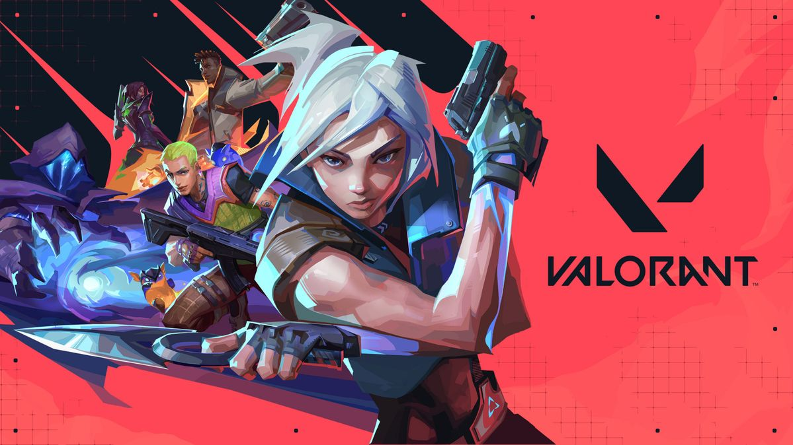

Cómo jugar con bots en Valorant para practicar y mejorar tu nivel
Por: Redacción TeenNews (Vía Esportmaniacos)
Riot Games ha implementado mejoras clave en las herramientas de práctica de Valorant. Ahora los jugadores cuentan con opciones avanzadas para configurar bots en partidas personalizadas, permitiendo a los usuarios principiantes y avanzados testear alineaciones (lineups), dominar las rutas de los mapas y perfeccionar la puntería sin la presión de una partida real.
¿Cómo activar los bots en una partida personalizada?
Configurar una sesión de entrenamiento con personajes automatizados es muy fácil y se gestiona directamente desde las opciones de la sala de juego:
- Entrá al menú principal de Valorant y seleccioná la opción de **Partida Personalizada** (Custom Game).
- Elegí el mapa que quieras practicar (como Bind, Ascent o Haven) y activá la opción de **Permitir trucos** (Cheats) en los ajustes de la sala.
- Una vez dentro de la partida, abrí el menú de pausa y andá a la pestaña de "Trucos". Desde ahí vas a poder habilitar la aparición de bots enemigos en posiciones fijas o con movimiento básico.
Rutinas de entrenamiento para mejorar tu puntería
Los analistas y entrenadores de esports destacan tres ejercicios fundamentales que podés hacer usando estas herramientas automatizadas:
1. Práctica de Pre-Aim (Pre-apuntado)
Colocá los bots en las esquinas más comunes donde se esconden los rivales. Practicá salir caminando e intentar colocar la mira directo en sus cabezas a través de las paredes. Esto te va a dar una memoria muscular tremenda para las partidas competitivas.
2. Control de Recoil (Retroceso)
Configurá bots con escudo pesado y practicales ráfagas cortas con la Vandal o el Phantom a diferentes distancias. El objetivo es aprender a bajar el mouse al ritmo exacto en que las balas empiezan a dispersarse.
3. Testeo de Habilidades y Lineups
Al activar los trucos podés tener habilidades infinitas. Usá los bots enemigos para ver exactamente el rango de explosión de las granadas de Raze, las flechas de Sova o los humos de Brimstone en tiempo real sobre un objetivo estático.
El campo de pruebas (The Range)
Si no querés armar una partida de cero, recordá que el **Modo Práctica** tradicional sigue siendo la mejor opción para calentar las manos. Configurar los bots del panel en dificultad media o alta antes de tu primera partida del día es el calentamiento ideal que usan hasta los profesionales del circuito mundial.